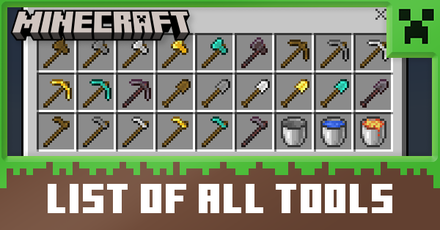

Minecraft Tools and Weapons
HOME
DIMENSIONS
MOBS
ITEMS
WHAT DO THE TOOLS AND WEAPONS OF MINECRAFT DO?
Tools and weapons in a minecraft world help the player a lot in playing the game. It makes progressing in a world much easier and faster once you get to higher tiers of tools.
TIERS OF MINECRAFT TOOLS
There are tiers to minecraft tools on what material/ore is used to make them. For example, wood is the lowest out of all the tools since this is the easiest to craft and netherite tools being the highest since it is the hardest to obtain.

WOOD TOOLS
Wood tools are one of the basic things that you get when you start a minecraft world. These tools are easy to get since all you need to do is get wood, craft a crafting table and some sticks, then you can make wood tools. You can also use this for fuel for smelting food and ores in a furnace, blast furnace, or smoker.

STONE TOOLS
After you get wood tools, the next thing that you need to do is go to a cave and get some stone. This will be one of the most important parts on having a survival world since this is where you get more items and ores. Without this, you won't be able to progress that fast in a survival world.

IRON TOOLS
After getting stone tools and acquiring iron, you can now craft iron tools. Getting iron tools is the start of advancing and the mid game in a survival world. You can now mine diamonds and more ores faster since tools in the iron tier has more durability and has faster mining speed than wood and stone tools.

GOLD TOOLS
Gold tools are not that needed in a survival world but really important when going to the nether. Piglins don't attack you when you are wearing atleast one piece of gold armor or using a gold tool which makes it really useful in the nether. Gold tools have one of the fastest mining speeds in the game but the problem with them is they have really low durability which makes them break fast.

DIAMOND TOOLS
Having acquired diamonds is probably one of the best feelings that you can have while playing a survival world. Having diamond tools is the start of having better stuff since this is the second best tool in the game. Mining and using it as armor is really good and very durable making it one of the best items that you can get in the game. Getting diamond tools is also easier to get and craft than netherite tools since it takes a lot of time in getting ancient debris in the nether.

NETHERITE TOOLS
Getting a complete set of netherite tools means that you are at the end game in a survival world. This is one of the fastest and most durable tools in minecraft which makes it the best tier of tools. Netherite tools doesn't burn in lava or in fire which means if you fall in lava it won't melt or despawn meaning you can comeback for it. The material needed to get netherite is really slow and hard to get since you need to mine in the nether which is really risky since there is a lot of lava here. One mistake can lead to death and you can lose all your stuff but it is really worth it to get since it is really good.

To summarize everything that we talked about, the table below describes each tier of tool. The numbers from 1-5 describes how good it is.
| Wood | Stone | Iron | Gold | Diamond | Netherite | |
|---|---|---|---|---|---|---|
| Mining Speed | 1 | 2 | 3 | 4 | 5 | 5 |
| Durability | 1 | 2 | 2 | 1 | 5 | 5 |
| Easy to get | 5 | 5 | 3.5 | 3 | 2 | 1 |
| Usefulness | 5 | 5 | 5 | 3 | 5 | 5 |
| Beginner Friendly | 5 | 4 | 3 | 3 | 2 | 1 |